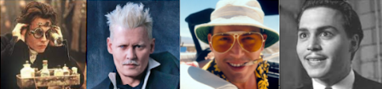

Tom Lehrer's play More of Tom Lehrer features "The Elements," his pastiche of "Major-General's Song" from The Pirates of Penzance by Gilbert and Sullivan. Lyrics include "There's antimony, arsenic, aluminum, selenium and hydrogen and oxygen and nitrogen and rhenium."
The 2016 movie Assassin's Creed continued the streak of videogame adaptations that bomb at the box office (like 1993's Super Mario Bros. and 2003's House of the Dead). Michael Fassbender appears as both Miles Lynch and his genetic ancestor Aguilar de Nerha, original characters created for the movie. It failed to beat both Rogue One and Sing in its opening weekend.
In Buffy the Vampire Slayer, Xander's the "Zeppo" of the Scooby Gang, at least according to Cordelia Chase. Over the course of seven seasons, he falls in love with an ancient Incan mummy, is cursed with smallpox by the Ojibwa spirit Hus, and has his left eye gouged out by the mad evil preacher Caleb (played by Nathan Fillion, fresh off the recently cancelled series Firefly).
One of the best-selling jazz records of all time, Kind of Blue was Miles Davis's masterpiece. Recorded at Capitol's music studio in New York, the record was named for how Davis felt at the time. In addition to Davis playing trumpet, Kind of Blue also featured John Coltrane playing saxophone and Paul Chambers on bass.
Shiny Question #1: Who's a good boy?!
Who are the dogs shown below?
The Big Bang Theory featured numerous celebrities playing themselves over its 12-season run. Buzz Aldrin appears in season 6's "The Holographic Excitation"; James Earl Jones and Sheldon prank Carrie Fisher in season 7's "The Convention Pratfall"; and Penny, Amy, and Bernadette join William Shatner, Joe Manganiello, and Kareem Abdul-Jabbar in a D&D game hosted by Wil Wheaton.
Although in the show, it was a fictional cocktail with a ridiculous recipe used to help keep Woody on the staff, Cheers Beacon Hill sold a Screaming Viking drink that used two types of rum, cranberry juice, and pineapple juice. It's not known if bartenders still had to offer to bruise the quinine as Woody offers in the show.
Some moviegoers were shocked when in the sequel Fantastic Beasts: The Crimes of Grindelwald, it turned out Ezra Miller's Credence Barebone was secretly related to another character, as his real name was in fact Aurelius Scamander.
While many are familiar with Gulliver's travels to Lilliput, where he is surrounded by tiny people, the tables were turned in Part II when he is abandoned on the North American continent and meets the Brobdingnagians, a race of giants. He is nursed back to health by a farmer's daughter he meets, whom he names "Blizzerdione."
Shiny Question #2: Badges of Honor
Can you identify the video game each set of 4 badges is from?
In Mystery Science Theater 3000, Joel Hodgson is joined by robots constructed from common household items, like a bowling pin and lacrosse mask for Crow T. Robot, a child seat and Eveready flashlight for Gypsy, and a sewing machine for Tom Servo.
Series finales are tough. Just ask the producers of Dexter, who were widely criticized for the series finale "Remember the Monsters?" in which Dexter takes his sister off of life support, dumps her body at sea, fakes his own death in a hurricane, and becomes a carpenter living in Oregon.
On Sesame Street, Jerry Nelson's dulcet tones were often heard announcing Sesame Street News Flash broadcasts and the adventures of Super Grover, as well as voicing characters Sam the Robot, Fred the Wonder Horse, the Amazing Stuart, and most notably, Count von Count.
The murder of Duncan contributes to Lady Macbeth's breakdown in Act V of Macbeth in which she exclaims "Out, damned spot!" But it's not just visible hallucinations, it's other senses as well, judging from her line "All the bazaars of Arabia will not sweeten this little hand."
Shiny Question #3: The Song Remains the Same
Can you identify the musicals these four songs are from? (Although you should know, I can't sing so it's just me reading the lyrics as atonally as possible and not giving any indication of song breaks.)
Known for amazing stunt work in Sherlock, Jr. and Steamboat Bill, Jr., Buster Keaton was forced to use a stunt double after signing with MGM in 1928. MGM mainly focused on pairing Keaton with Jimmy Durante in films like What! No Beer? and The Passionate Pauper.
Ed Wood received a surrogate Golden Turkey Award in honor of his numerous bad films, including the semi-autobiographical Glen or Glenda, the epitome of turkeys Plan 9 from Outer Space, and Bride of the Atom, which featured a killer octopus.
In the Washington Irving story The Legend of Sleepy Hollow, Ichabod Crane's fate is never clearly stated, as all that remains of his fight with the Headless Horseman is the discarded saddle of his horse Gunpowder, Crane's hat, and a shattered turnip. His rival Brom Bones marries Katrina and legends begin to swirl around Ichabod's departure.
In the videogame Alan Wake, you play as Wake, a best-selling author who travels to Bright Falls, Washington in an effort to overcome writer's block. You use a flashlight to battle the Taken and collect pages from the manuscript for Departure, a novel you do not remember writing. A sequel to Alan Wake was planned, but was scrapped and later incorporated into Remedy's Museum Break.
Shiny Question #4: Who Are You Rooting For?
Identify the teams these mascots represent.
Known mostly for his magazine articles, gonzo journalist Hunter S. Thompson wrote two unpublished novels: Prince Jellyfish and The AM Diary. Both were loosely based on Thompson's own life to that point. The first remains lost and unpublished, but the latter was found and published in 1998.
1993's Groundhog Day, featuring Bill Murray as meteorologist Phil Connors, popularized the concept of a time loop film. Nickelodeon's version is 2007's The Last Day of March. A slasher version is 2017's Happy Death Day starring Jessica Rothe, and a videogame-like version is 2021's Boss Level featuring Frank Grillo and Mel Gibson.
Poor Ganryu of the Tekken series. This mud wrestler and one-time henchman falls in love with fellow fighter Michelle Chang in the second King of Iron Fist Tournament, and then with her adopted daughter Julia Chang in a later tournament. Ganryu fails to capture the heart of either fighter.
Long before A Song of Ice and Fire, George R. R. Martin was known for the Wild Cards series, set in an alternate universe where humans contract a virus that gives a select few survivors deformities or superpowers. Volumes in the series have card-related titles, including Dead Man's Hand, One-Eyed Jacks, and Black Jack.
Shiny Question #5: Emeht VT
We've played these TV themes backwards. Can you identify them?
Some fourteen years after the first game in the series, Red Dead Redemption 2 follows the adventures of Arthur Morgan and allowed players to visit Rockstar's version of America, from Saint Denis, the in-game New Orleans, to Blueberry, the farthest west town; from Blackwater (modeled after a real town in Missouri) to Guarma, an island similar to Cuba.
Resident Evil: Operation Raccoon City allows players to be members of the United States Spec Ops Field Unit, including demolition expert Tweed and sniper Party Girl; or to be members of the Spartan Security Service team, including medic Bertha and scientist Four-Eyes.
Aside from Bart (whose first name is an anagram of "brat"), Matt Groening named several characters after members of his own family, including Homer for his father, Marge for his mother, Lisa and Maggie for his sisters, and Burns for his mother-in-law's maiden name.
Envious of how Daisy Mae and Li'l Abner Hill can kick back with Kickapoo Joy Juice, a potent moonshine that could remove hair, paint, or a tattoo? Well, as of 1965, you too can enjoy a non-alcoholic, citrusy version of Al Capp's imaginary hooch.
Shiny Question #6: Here's Johnny
Who is Johnny Depp portraying here?